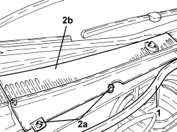
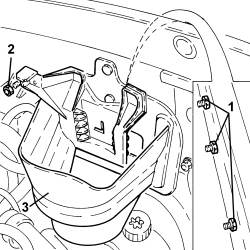

1044B12 FUEL FILTER PROTECTION R R
- Path
- Procedures > 10 ENGINE > 1044 FUEL CIRCUIT PUMP/S AND DEVICES > 1044B FUEL FILTERS > 1044B12 FUEL FILTER PROTECTION R R
- Kind
- repair procedure (removal / refitting; the operation number is the code)
- Applies to
- engines: 1.9 JTD 8v, 1.9 JTD 16v; all production periods
- Interactive page
- https://sloeber94.github.io/elrnDB-fCrm/en/#/194002162
Applies to: engines: 1.9 JTD 8v, 1.9 JTD 16v; all production periods
 Removing
Removing
 Refitting
Refitting- Make sure that the ignition key is in the OFF position, then disconnect the battery terminal (-).
Description | Connector | |
|---|---|---|
- | Battery |
Op. 1016A10 SOUND-PROOFING COVER - R.R
Op. 1044B10 FUEL FILTER ASSEMBLY - R + R OR REPLACE
1. Partly release the engine compartment seal.
2. Undo the bolts (2a) and remove the grille under the windscreen (2b) on the right side.

Applies to: engines: 1.9 JTD 8v, 1.9 JTD 16v; all production periods
1. Working via the compartment under the windscreen, undo the nuts fixing the fuel filter protection to the bodyshell.
2. Undo the nut fixing the heater plugs control unit mounting bracket.
3. Remove the fuel filter protection.

Applies to: engines: 1.9 JTD 8v, 1.9 JTD 16v; all production periods
Refitting
Removing- Place the fuel filter protection back in its housing.
- Tighten the nut fixing the heater plugs control unit mounting bracket.
- Working via the compartment under the windscreen, tighten the nuts fixing the fuel filter protection to the bodyshell.
- Place the grille under the windscreen on the right side in it housing and secure it using the bolts.
- Place the engine compartment seal back in its housing.
Op. 1044B10 FUEL FILTER ASSEMBLY - R + R OR REPLACE
Op. 1016A10 SOUND-PROOFING COVER - R.R
- Connect the negative battery terminal.